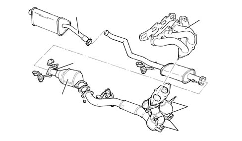

INTRODUCTION - EXHAUST PIPES AND SILENCERS
- Path
- Descriptions > 10 ENGINE UNIT > 1076 EXHAUST PIPES AND SILENCERS > INTRODUCTION - EXHAUST PIPES AND SILENCERS
- Kind
- system description
- Applies to
- engines: 1.8 T.SPARK; all production periods
- Interactive page
- https://sloeber94.github.io/elrnDB-aGt/en/#/125000298
Applies to: engines: 1.8 T.SPARK; all production periods
CONSTRUCTION SPECIFICATIONS
The engine exhaust gases flow into two twin (steel) manifolds and then into two three-way pre-catalyzers which are connected by a single pipe and from there to a main catalyzer.
The remaining exhaust pipe comprises a centre silencer and a rear silencer.
The entire exhaust pipe is anchored by means of flexible supports secured to the underbody which, in addition to supporting the pipe, are designed to restrict the transmission of vibrations.
Special guards prevent heat radiating toward the body.

1 - Exhaust manifold
2 - 2 Lambda sensors upstream of the precatalyzers
3 - 2 Precatalyzers
4 - Main catalyzer
5 - Lambda sensors downstream of the catalytic converter
6 - Centre exhaust pipe
7 - Rear exhaust pipe
ECE PHASE 4 regulations involve a very stringent check on exhaust emissions; for this reason the engine management strategy has had to be reviewed.
Characteristic of working principle 1056 PETROL INJECTION SYSTEM
In addition to the catalytic converter and the Lambda sensor, the exhaust pipe also has two catalytic preconverters and Lambda sensors.
The specifications of the precatalyzers are the same as those for the main catalytic converter.